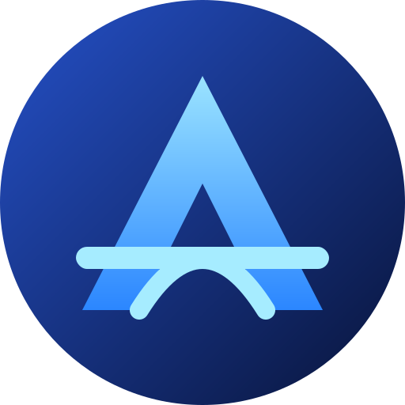
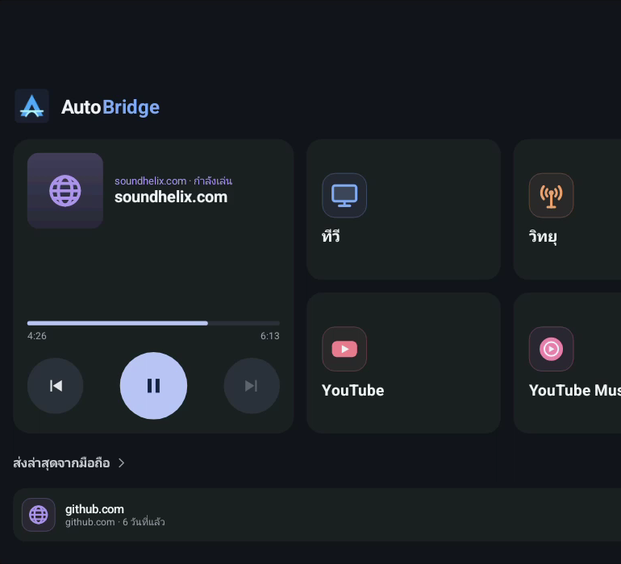
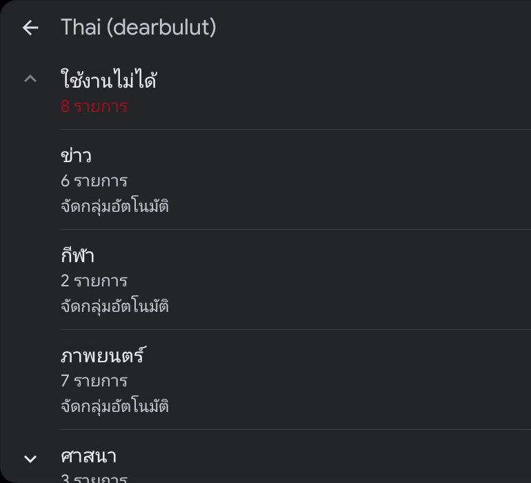
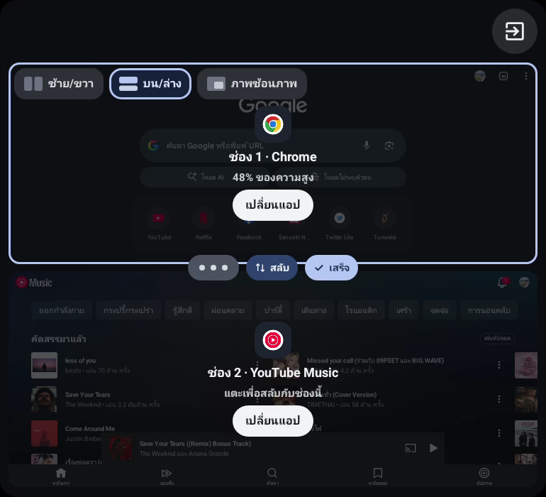

Auto
Bridge
· Android Auto
มีอะไรใหม่ใน
v0.4.58
อัปเดตใหญ่

หน้าแรกบนรถ คุมเพลงได้ทันที

ทีวีจัดกลุ่มให้อัตโนมัติ

Duo · แตะเพื่อสลับช่อง
My Car ใหม่ทั้งหน้า
รวมเครื่องมือรถ การเชื่อมต่อ และการตั้งค่าไว้หน้าเดียว
โปรไฟล์รถ บันทึกจอรถ แชร์ และนำเข้าได้
บัตรฉุกเฉินใหม่ ปุ่มโทรชัด ประกันคู่กับเลขกรมธรรม์
เพิ่ม/แก้ข้อมูลในแผ่นเดียว มีหน่วยและตัวเลือกให้แตะ
ทีวี IPTV ฉลาดขึ้น
รายการกำลังฉายและถัดไปของแต่ละช่อง
จัดกลุ่มข่าว กีฬา ภาพยนตร์ให้อัตโนมัติ ค้นหาช่องได้
ช่องที่เสียแยกไว้ให้ ตารางช่อง 2 คอลัมน์
ตัวเล่น VLC ในตัว จำจุดที่ดูค้างไว้
Duo Screen สองจอบนรถ
แถบลัดลอย สลับแอปและสั่งงานจากจอรถ
คีย์บอร์ดเปิดในช่อง ไม่ต้องหยิบมือถือ
สลับช่องได้ด้วยปุ่ม แตะ หรือลาก
ลากเส้นแบ่งลื่นขึ้น และไม่ถูกการ์ดของรถบัง
สั่งด้วยเสียง
"เพลงถัดไป" "ก่อนหน้า" "หยุด" "นำทางไป…"
ตอบไวขึ้น พิมพ์หรือพูดก็เข้าใจเหมือนกัน
ไม่ค้างอีก ถ้าช้าเกินไปจะแจ้งทันที
หน้าทดสอบเสียงจับเวลาทุกคำสั่ง
ลื่นและเสถียรกว่าเดิม
Performance mode ลดภาระเองเมื่อเครื่องร้อน
Car setup บอกสาเหตุปัญหา แก้ได้ในแตะเดียว
หยุดเมื่อถอดรถจริง ไม่หยุดเพราะสลับแอป
แก้แอปเด้งออกตอนปิดช่องทีวี
ที่จอดรถ · เว็บ · สตรีมมิง
ปักหมุดที่จอดเร็วขึ้น ใต้ดินก็บันทึกได้โดยไม่ใช้ GPS
คีย์บอร์ดของแอปแบบ iOS บนเบราว์เซอร์รถ
ปุ่มคีย์บอร์ดลอยบนเบราว์เซอร์รถ
เพิ่มเว็บสตรีมมิงยอดนิยมในไทย